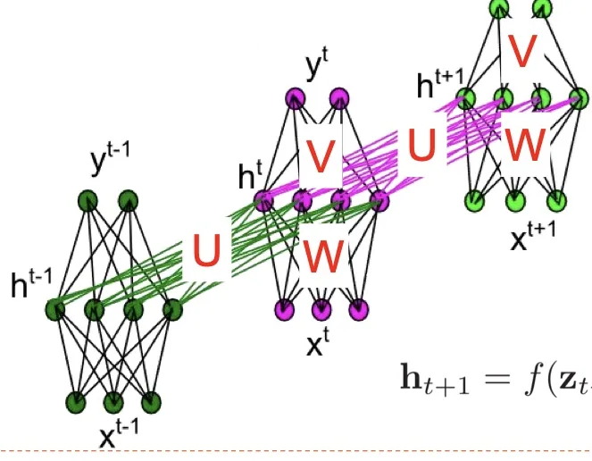
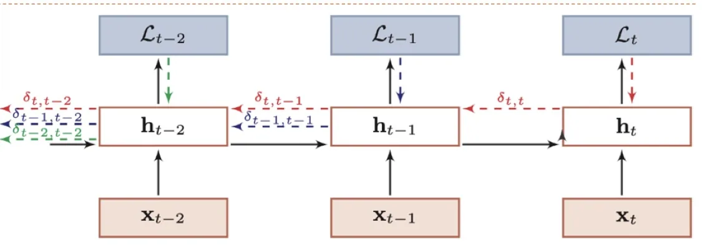

计算机视觉 · 第 7 章 循环神经网络
7.4 参数学习：BPTT 与 RTRL
结构与用法都清楚了，接下来是训练环节：参数怎么学。循环神经网络里存在一个递归调用的函数——每一时刻的计算都要用到上一时刻的状态，所以求梯度的方式与前馈网络并不相同。课件给出了两种计算梯度的算法：随时间反向传播与实时循环学习，前者沿时间反向递推，后者沿时间前向递推。本节把两者的思路、公式与代价讲清楚，为下一节讨论长程依赖问题埋下伏笔。
1. 递归结构带来的新问题
课件开门见山地点出差别：循环神经网络中存在一个递归调用的函数，因此计算参数梯度的方式和前馈神经网络不太相同。在前馈网络里，每一层的参数只影响它之后的层，误差反着传一遍就能算完；而在 RNN 里，同一个参数（比如 W）在每一个时刻都被用到，它的梯度自然要把所有时刻的贡献累加起来。
课件指出，在循环神经网络中主要有两种计算梯度的方式：
- 随时间反向传播（BackPropagation Through Time，BPTT）：把网络按时间展开，再按前馈网络的误差反向传播来算；
- 实时循环学习（Real-Time Recurrent Learning，RTRL）：不展开，直接在时间上前向递推偏导数。
2. 损失函数与梯度
先约定记号。给定一个训练样本 (x, y)，其中 x = (x1, …, xT) 为长度是 T 的输入序列，y = (y1, …, yT) 是长度为 T 的标签序列——即在每一时刻 t 都存在一个监督信息 yt。这正是 7.3 节里人名识别那种「每一时刻都有输出、都要比对」的设定。
在这个前提下，课件定义时刻 t 的损失函数为 Lt = L(yt, g(ht))。
整个序列的损失函数为各时刻损失之和：L = Σt=1T Lt。
于是损失关于参数 U 的梯度可以写成各时刻梯度之和：∂L/∂U = Σt=1T ∂Lt/∂U。
这个「求和」不是技巧，而是权值共享的必然结果：同一个 U 在 T 个时刻都被使用，它的总梯度就是各时刻贡献的叠加。前面 7.2 节讲的「时间维度上权值共享」，代价就体现在这里——梯度计算要把整条时间链都走一遍。
3. 随时间反向传播 BPTT
BPTT 的基本思想是：把 RNN 看作一个展开的多层前馈网络，其中「每层」对应 RNN 中的「每一时刻」。这样一来，RNN 就可以直接套用前馈网络中的 BP 算法计算参数梯度。课件特别提醒了一句：在「展开」的前馈网络中，所有层的参数是共享的，因此参数的梯度是所有「展开层」的梯度之和。

具体怎么算？课件引入了一个中间量：δt,k 为第 t 时刻的损失对第 k 步隐藏神经元的净输入 zk 的导数，即误差项。有了它，各参数的梯度都可以写成两层求和的形式：
- ∂L/∂U = Σt=1T Σk=1t δt,k · hk−1T；
- ∂L/∂W = Σt=1T Σk=1t δt,k · xkT。
公式的含义是：求 t 时刻损失的梯度时，需要把从 k = 1 到 k = t 的每一个时刻（展开网络里的每一层）都算进来。而误差项 δt,k 本身要靠沿时间反向递推得到：δt,k = ∏i=kt−1 (diag(f′(zi)) UT) · δt,t。
也就是说，从当前时刻往回走，每经过一个时刻就要乘上一次「激活函数的导数」与「权重矩阵 UT」。这个连乘在后面 7.5 节会变成关键：连乘的项数越多，结果越容易趋于 0 或趋于无穷。

课件还指出了一个例外：求 V 的梯度比较直观，不涉及时序和之前的状态，直接使用链式求导法则即可。原因也简单——V 只把当前隐状态映射到当前输出，不参与跨时刻的传递。
把上面的步骤串起来，就是使用 BPTT 训练 RNN 的完整流程：
- 前向计算每个神经元的输出值，如 ht+1 = f(zt+1) = f(U ht + W xt+1 + b)；
- 反向计算每个神经元的误差项；
- 计算每个权重的梯度；
- 用梯度下降算法更新权重。
这与前馈网络的训练流程在形式上完全一致，区别只在于第 2 步的误差要沿着时间轴往回传。
4. 实时循环学习 RTRL
另一条路线是实时循环学习（RTRL），它的基本思想是：通过前向传播的方式来计算梯度。既然参数在每一时刻都会被用到，那就在前向计算的同时，把「隐状态对参数的偏导数」也一并递推出来。
课件从第 t+1 时刻的状态入手。设 ht+1 = f(zt+1) = f(U ht + W xt+1 + b)，那么它关于参数 uij 的偏导数由两部分叠加而成：一部分是「ht 对 uij 的偏导数经权重矩阵 U 传到当前时刻」，另一部分是「uij 直接作用于当前时刻」带来的贡献，两部分再统一乘上当前时刻激活函数的导数。这样一来，只要知道上一时刻的偏导数，就能算出这一时刻的偏导数。
于是实时循环算法从第 1 个时刻开始，除了计算 RNN 的隐状态之外，还利用上述公式依次前向计算 ∂h1/∂uij、∂h2/∂uij、∂h3/∂uij、…。这样，假设第 t 个时刻存在一个监督信息，其损失函数为 Lt，就可以由链式法则同时计算损失函数对 uij 的偏导数：∂Lt/∂uij = (∂ht/∂uij) · (∂Lt/∂ht)。
两者的方向恰好相反：BPTT 是「先跑完整条序列，再回头算梯度」，RTRL 是「一边往前走，一边把梯度带在身边」。
5. 两种算法的取舍
课件把两者的比较总结为三点。首先，BPTT 和 RTRL 都是基于梯度下降的算法，分别通过反向模式和前向模式应用链式法则来计算梯度——这一点与自动微分里反向模式、前向模式的区别是一回事。
其次，BPTT 算法计算量小，但它需要保存所有时刻的中间梯度，空间复杂度较高：序列有多长，就要存多长的中间结果。这也解释了为什么训练长序列时显存会成为瓶颈。
最后，RTRL 算法不需要梯度回传，因此非常适合用于需要在线学习或无限序列的任务：数据一边来一边学，不必等整条序列结束；代价则是每一步都要维护并更新偏导数，计算量随参数量的平方增长，通常远大于 BPTT。
正因为 BPTT 在实际中更常用，下一节讨论长程依赖问题时，我们看的就是它——那条「沿时间反向连乘」的路径。
本节小结
- RNN 存在递归调用的函数，参数的梯度必须把各时刻的贡献累加起来：L = Σt Lt，∂L/∂U = Σt ∂Lt/∂U。
- 每时刻的损失定义为 Lt = L(yt, g(ht))；训练样本的标签序列与输入序列等长，每一时刻都有监督信息。
- BPTT 把 RNN 展开成多层前馈网络，「每层」对应「每一时刻」，按 BP 算法求梯度；误差项 δt,k 需要沿时间反向递推，∂L/∂U、∂L/∂W 都是「对所有时刻的两重求和」；V 的梯度不涉及时序，直接用链式法则。
- RTRL 用前向传播求梯度：在前向计算隐状态的同时递推 ∂ht/∂uij，适合在线学习与无限序列。
- 两者分别对应反向模式与前向模式的链式法则：BPTT 计算量小而空间复杂度高（要存所有时刻的中间梯度），RTRL 无需回传但计算量大。